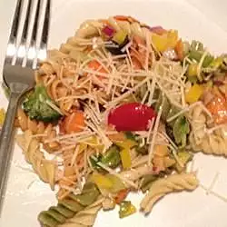

Pasta Salad Recipe

This fresh, easy pasta salad recipe comes together in under 30 minutes! Tossed in a tangy vinaigrette & filled with veggies, it's a sure cookout hit.
Ingredients
- 2 cups penne pasta
- ¼ cup red wine vinegar
- 1 tablespoon lemon juice
- 2 cloves garlic, crushed
- 2 teaspoons dried oregano
- salt and pepper to taste
- ⅔ cup extra-virgin olive oil
- 10 cherry tomatoes, halved
- 1 small red onion, chopped
- 1 green bell pepper, chopped
- 1 red bell pepper, chopped
- ½ cucumber, sliced
- ½ cup sliced black olives
- ½ cup crumbled feta cheese
Steps
- Fill a large pot with lightly salted water and bring to a rolling boil over high heat. Once the water is boiling, stir in the penne, and return to a boil. Cook the pasta uncovered, stirring occasionally, until the pasta has cooked through, but is still firm to the bite, about 11 minutes. Rinse with cold water and drain well in a colander set in the sink.
- Whisk together the vinegar, lemon juice, garlic, oregano, salt, pepper, and olive oil. Set aside. Combine pasta, tomatoes, onion, green and red peppers, cucumber, olives, and feta cheese in a large bowl. Pour vinaigrette over the pasta and mix together. Cover and chill for 3 hours before serving.